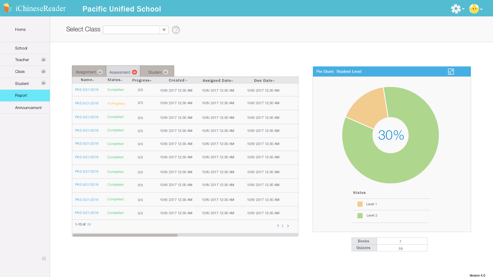
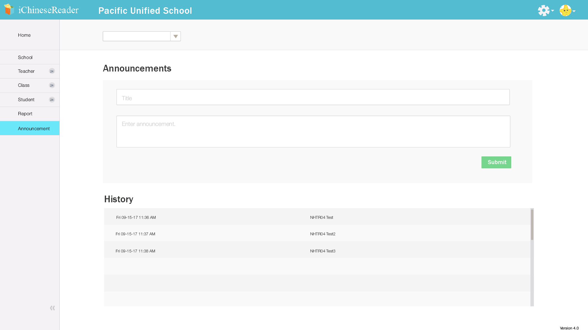

Professional Work
Designed a web and mobile mock-up for reading books and taking quizzes.
The idea is for K-6 students to be engaged in reading digital books.
Designed web mock-up for school administrators to keep track of progress in reading and homework in class
Homepage for school administrators to view teachers’ status and student homework progress.
Reports and percentages of student progress to be viewed by administrators.
Different tabs reveal assignments, assessments, and student progress.

School administrators can export, import, create, or delete teacher information.

Be able to submit announcements and view history of announcements